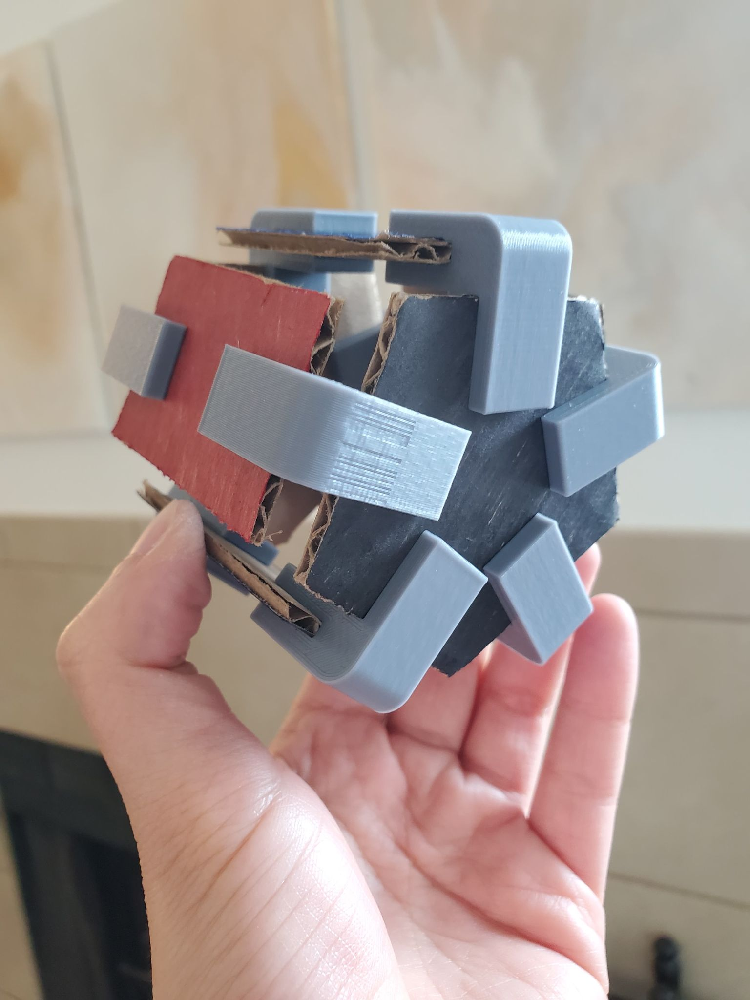

A3: Getting Started with Grasshopper!
In Part 1 of this assignment, I designed 3D clips in Grasshopper.
I had some challenges with the boolean and extrusion-equivalent functions in Grasshopper, perhaps due to my limited knowledge.
So I just baked the shapes and used extrude and boolean in Rhino. Hope that was OK?
Below is a snapshot view in Grasshopper and Rhino.

I printed out 10 clips using 3D printer Robi, though I printed 1 to begin with before batch printing the remaining 9.
I performed some cardboard surgery to get the shapes I wanted, to which I clipped together to create "THE PENTABOMB." It's 100% aesthetically cool, but 1000% useless.

Although based on my roll&shake test, I'm pretty sure it's robust enough to injure someone who gets hit by it. Self-defense home weapon?
"THE PENTABOMB"
Grasshopper Definition
Rhino File
STL Results
For Part 2 of this assignment, I attempted a simple design to the nesting structures.
I created some hexagons (although the shape can be easily changed with the number slider) in Grasshopper.
Part of my focus for this exercise was to link the components in Grasshopper in a way that I could make changes quickly and easily.
The print came out as expected - and at a lightning fast speed of 6 minutes!
Although to be fair, it was a small print...㋡
"Hexagons are the Bestagons" - CPG Grey
Grasshopper Definition
Rhino File
STL Results